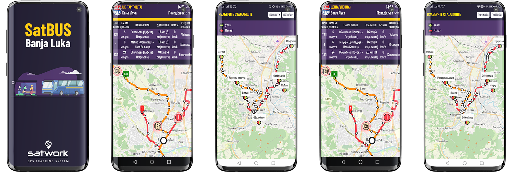
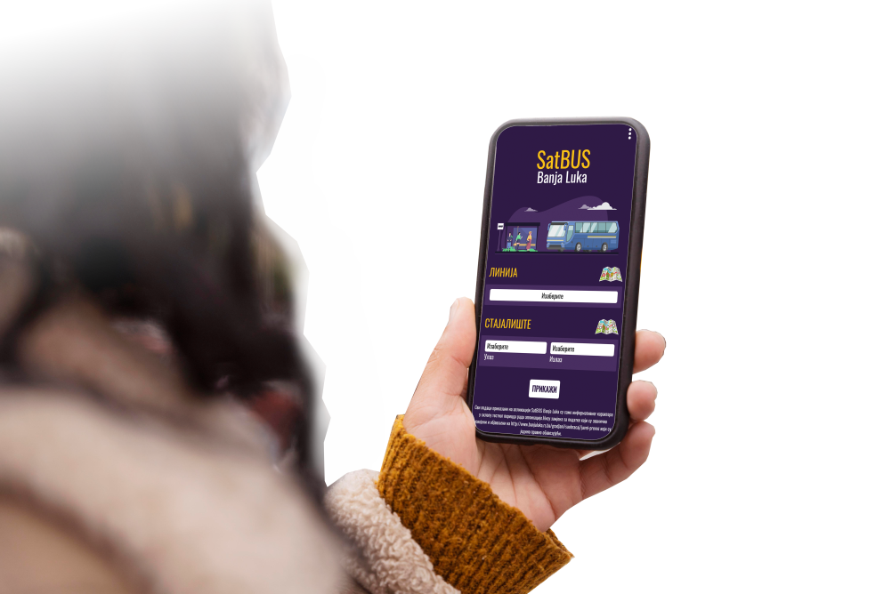

Sistem za praćenje javnog prevoza
u realnom vremenu.
SatBUS Banja Luka sistem je kompletno prilagođen za korištenje putem Android, iOS ili Huawei uređaja.
Prikaz svih linija i stajališta javnog prevoza.
Omogućava uvid u lokacije autobusa.
Omogućava brz uvid u vremena polazaka javnog prevoza.
Građani uvijek imaju način da ostanu informisani o javnom saobraćaju.
SatBUS sistem omogućava jednostavan prikaz svih potrebnih informacija o javnom saobraćaju.
Dizajnirali smo našu platformu za rad na bilo kojem uređaju koji naši korisnici mogu imati, bilo da se radi o iPhoneu, Androidu ili Tabletu.
Adresa: Bulevar vojvode Stepe Stepanovića 132, 78000 Banja Luka, RS/BiH
Tel: +387 51 233 000
Fax: +387 51 233 009
E-mail: info@satwork.net
Tel: +387 51 233 005
Fax: +387 65 700 905
E-mail: podrska@satwork.net
Tel: +387 51 233 001
Fax: +387 66 377 377, +387 66 111 911
E-mail: prodaja@satwork.net